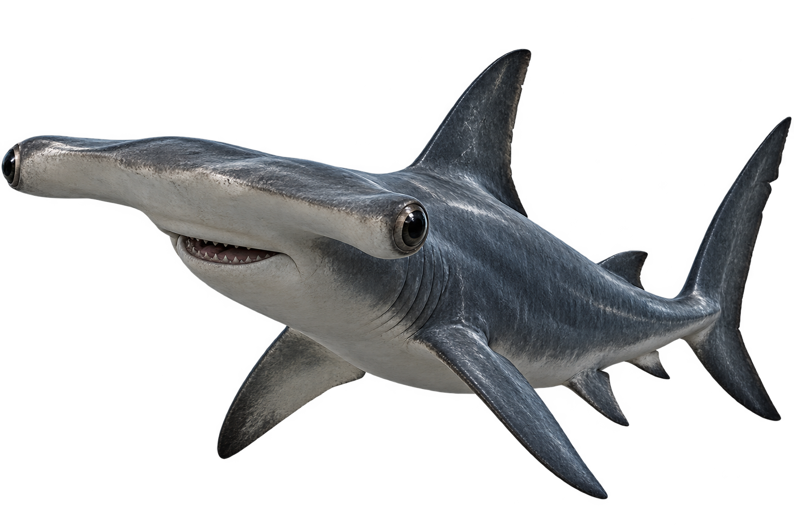
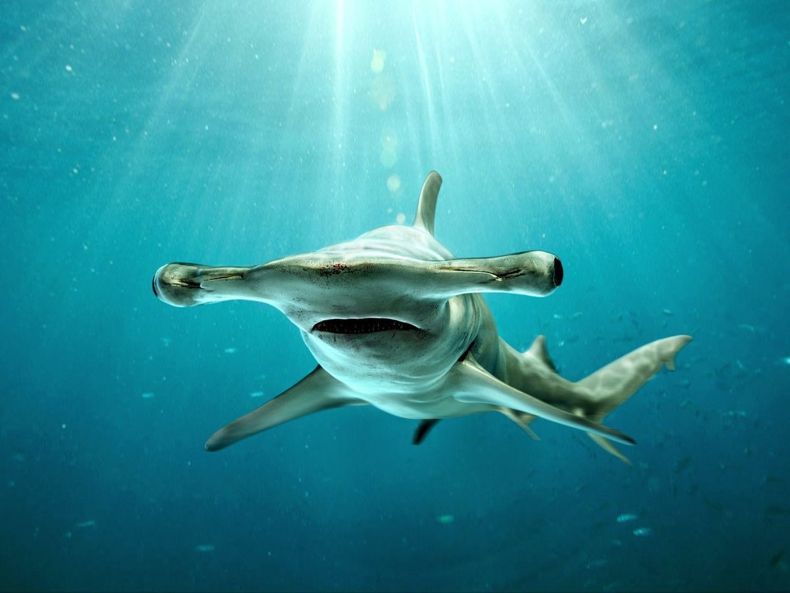
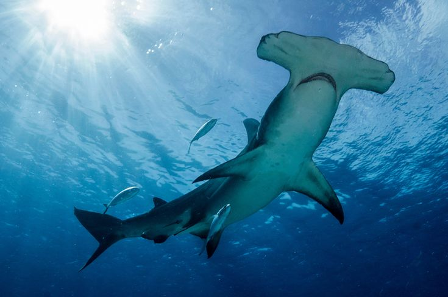
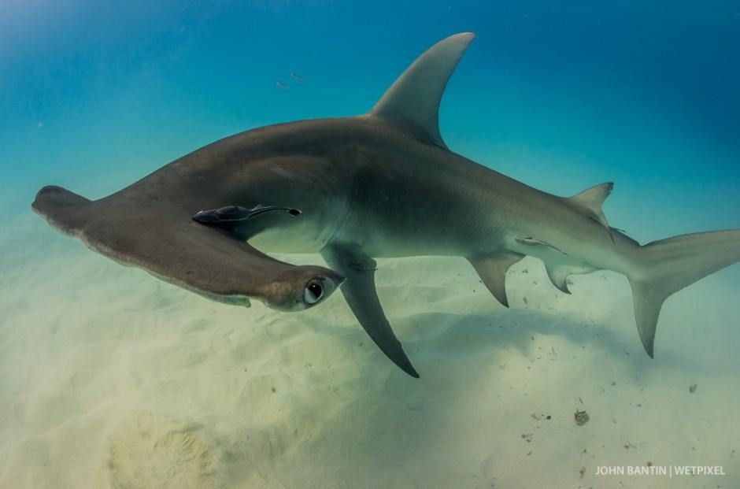

Tubarão-Martelo
Sphyrna
Os tubarões-martelo são conhecidos pelo formato único de suas cabeças, que lembra um martelo.

Curiosidades
Alimentação
Alimentam-se principalmente de peixes, lulas, crustáceos e arraias.
Tempo de vida
Podem viver entre 20 e 30 anos, dependendo da espécie.
Cabeça em Forma de Martelo
O formato da cabeça ajuda a melhorar sua visão e a localizar presas na água.
Nascimento
Os filhotes nascem vivos e, após o nascimento, precisam sobreviver sozinhos.
Importantes para o ecossistema
Ajudam a manter o equilíbrio dos oceanos ao controlar as populações de outros animais marinhos.
Habitat
Vivem principalmente em águas tropicais e temperadas ao redor do mundo.


Você Sabia?
Os olhos dos tubarões-martelo ficam nas extremidades da cabeça, proporcionando um amplo campo de visão!
